Controllable augmentation
Stage A operates directly on semantic maps and can target selected class ratios, turning augmentation from random synthesis into controlled distribution shaping.
IEEE IGARSS ORAL 2026
SyntheticGen turns augmentation into controllable data design. Instead of adding more samples at random, it generates the missing semantic compositions in the right domain, a ratio-conditioned D3PM first synthesizes semantic layouts, then a ControlNet-guided latent diffusion model renders domain-consistent satellite images. We show better segmentation does not only come from better architectures, it can also come from deliberately generating the training distribution that real data is missing.
1 University of Peradeniya, Sri Lanka | 2 Johns Hopkins University, USA
Long-tailed class imbalance remains a major obstacle in semantic segmentation of high-resolution remote-sensing imagery, where frequent classes dominate optimization and rare classes are systematically under-segmented. The problem becomes harder under domain shift: LoveDA explicitly separates Urban and Rural scenes, whose appearance statistics and class frequencies differ substantially. SyntheticGen addresses both challenges with a prompt-controlled diffusion augmentation framework that generates paired label-image samples with explicit control over semantic composition and domain. A domain-aware, masked, ratio-conditioned discrete diffusion model first synthesizes semantic layouts that satisfy class-ratio targets while preserving realistic co-occurrence structure, and a ControlNet-guided latent diffusion model then renders photorealistic, domain-consistent images from those layouts. When mixed with real data, the resulting synthetic pairs improve multiple segmentation backbones, especially on minority and mid-tail classes and in cross-domain evaluation, showing that better downstream segmentation can come from adding the right samples in the right proportions.
When semantic labels, class imbalance, and appearance shift coexist, the training distribution can be deliberately reshaped instead of passively inherited.
Stage A operates directly on semantic maps and can target selected class ratios, turning augmentation from random synthesis into controlled distribution shaping.
Layouts are generated and rendered with Urban/Rural awareness, so the synthetic samples match the appearance statistics of the domain where data is lacking.
The synthetic set adds 894 Rural and 1,106 Urban image-label pairs and improves all reported in-domain mIoU scores as well as both domain-transfer directions.
Architecture
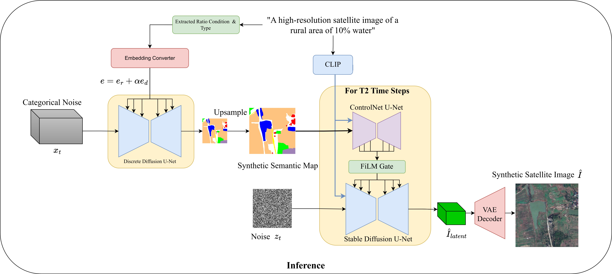
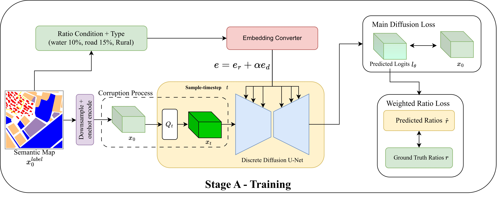

Benchmarks
Each pair compares the same segmentation backbone trained on LoveDA Original data and LoveDA Original+Synthetic data.
All five backbones improve in mIoU. U-Net shows the largest jump, from 39.77 to 51.36 mIoU, while AerialFormer reaches the highest reported in-domain mIoU among the tested models at 54.26.
For Rural-to-Urban transfer, FactSeg improves from 39.98 to 50.45 mIoU and HRNet improves from 43.95 to 53.79, showing that targeted synthesis reduces domain-specific shortcuts.
Generated examples
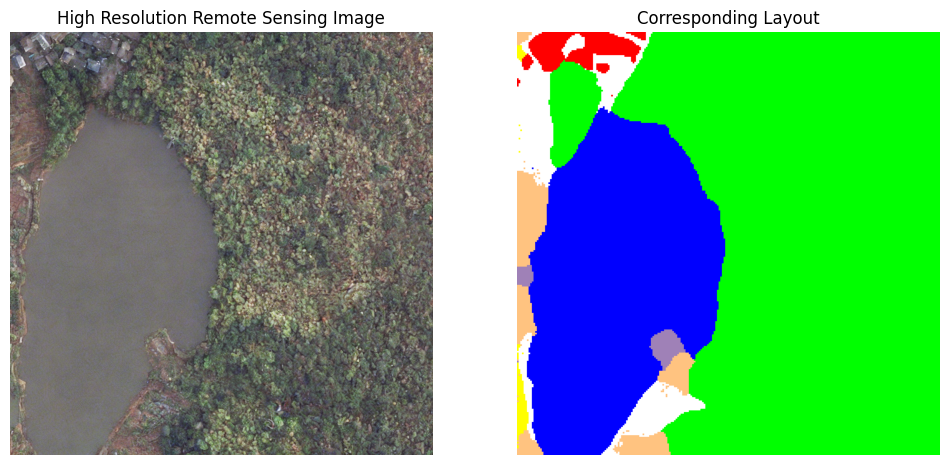
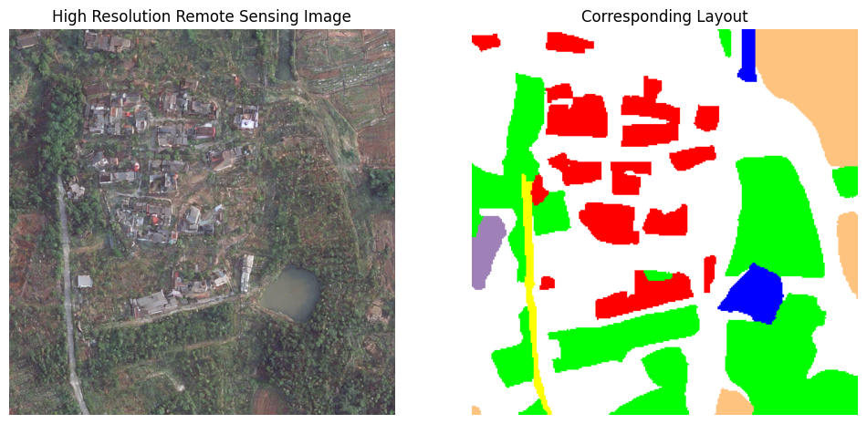
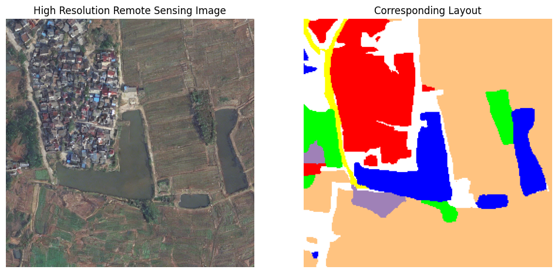
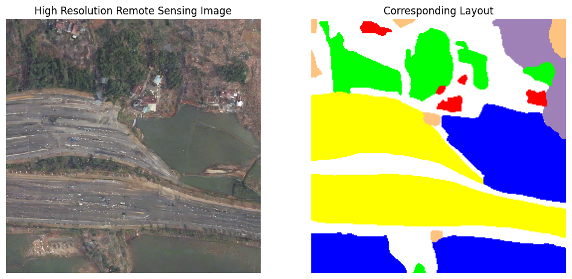
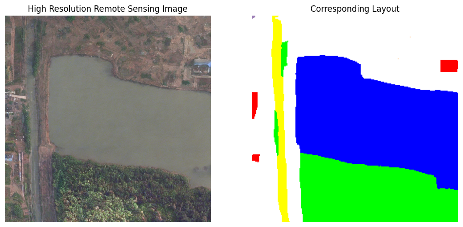
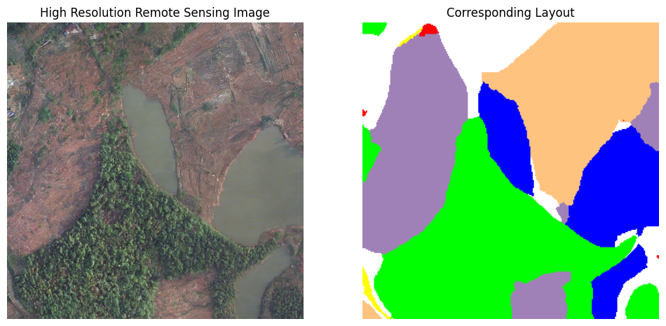
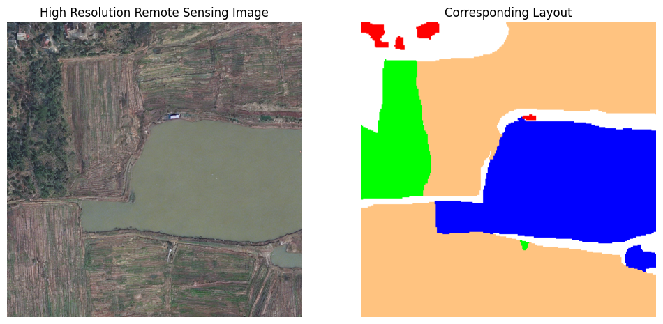
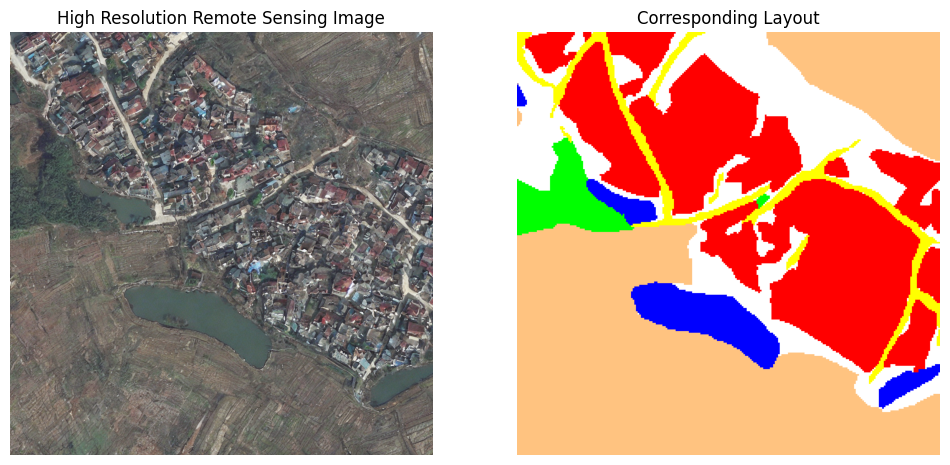
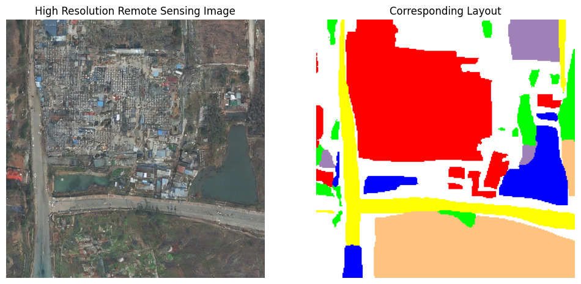
Core takeaway
SyntheticGen shows that diffusion augmentation is most useful for long-tailed segmentation when it is controllable. The framework does not simply add more images; it asks for domain-specific semantic compositions that the real training set lacks, checks whether generated candidates satisfy those constraints, and uses the accepted pairs to improve segmentation models under imbalance and domain shift.
The current evidence is on LoveDA, but the broader research message is more general: when the data distribution is the bottleneck, controllable generation can be used to reshape that distribution rather than only reweighting the loss or changing the backbone.
Citation
@article{wijenayake2026mitigatinglongtailbiaspromptcontrolled,
title={Mitigating Long-Tail Bias via Prompt-Controlled Diffusion Augmentation},
author={Buddhi Wijenayake and Nichula Wasalathilake and Roshan Godaliyadda and Vijitha Herath and Parakrama Ekanayake and Vishal M. Patel},
year={2026},
eprint={2602.04749},
archivePrefix={arXiv},
primaryClass={cs.CV},
url={https://arxiv.org/abs/2602.04749},
}